Para el mercaderista, el montador o la persona del proveedor que arma lo contratado en la tienda. Todo se hace desde el celular, con el enlace que llega por correo. No necesitás usuario ni contraseña.
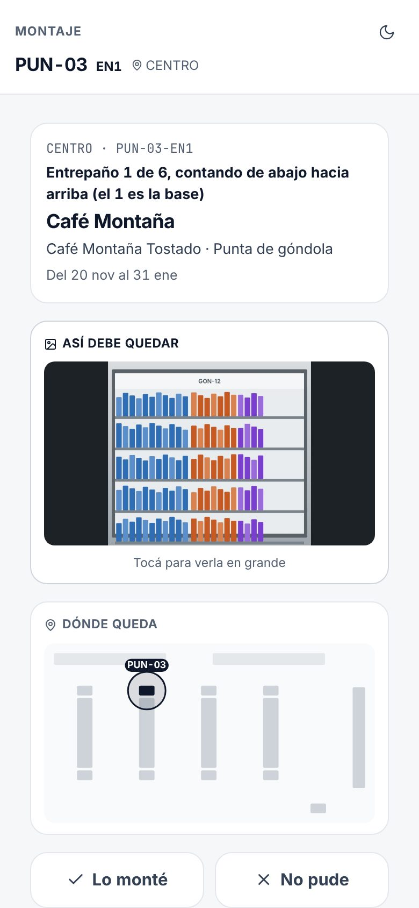
Versión
{{VERSION}} · {{FECHA}}
Sistema
{{APP}}
Equipo
Celular con internet y cámara
Tiempo de lectura
15 minutos
Datos de ejemplo
Todas las pantallas son de una sede de prueba («CENTRO»). Proveedores, marcas y personas son inventados.
1Antes de empezar
RECABRA es el sistema donde el supermercado lleva los espacios que le alquila a los proveedores: qué se vendió, a quién y desde cuándo. Tu parte es la última y la más visible: que la exhibición quede armada en la tienda y dejar la prueba.
Lo que vas a hacer con este manual
Abrir el aviso de montaje que te llega por correo.
Ver qué hay que armar, cómo debe quedar y dónde queda el espacio.
Reportar Lo monté con una foto, o No pude con el motivo.
Seguir la guía numerada de una góndola de la casa (planograma).
Lo que necesitás
Un celular con internet y cámara.
El correo donde te llegan los avisos de RECABRA.
Saber tu nombre como lo conocen en la tienda: lo escribís en cada reporte.
Lo que NO hacés vos
No ves precios ni contratos, no cambiás fechas y no elegís espacios. Si algo de eso está mal, avisale a quien administra la sede (la persona del supermercado que te mandó el aviso).
Sin contraseña
El enlace del correo te deja entrar directo a ese espacio. Es personal: no lo reenvíes.
La foto es obligatoria
Sin foto no se puede decir «Lo monté». Es la prueba de que quedó armado.
Siempre hay a quién avisar
Ante cualquier duda: quien administra la sede del supermercado.
2Todos los días: montar un espacio
Cuando el supermercado vende un espacio, te llega un correo con un enlace por cada espacio que hay que armar. Este es el camino completo, de la bandeja del correo al reporte.
2.1 Abrir el aviso de montaje
Cuándo: el día que arranca el contrato, o cuando te llega el correo «… por montar — [sede]».
Abrí el correo 1 espacio por montar — CENTRO y tocá Ver dónde queda y confirmar del espacio que vas a armar.
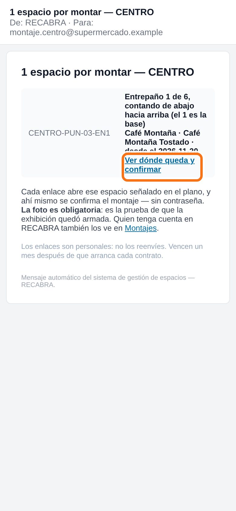
Se abre la pantalla de Montaje de ese espacio. Arriba está el código (por ejemplo PUN-03 EN1) y la sede.
Si te equivocás
Si abriste el enlace de otro espacio, no pasa nada: cerrá la página y tocá el enlace correcto en el correo. Mirar no cambia nada.
2.2 Mirar qué va y dónde
Cuándo: antes de armar, con el producto en la mano.
Leé la primera tarjeta: dice qué parte del mueble te toca, el proveedor y la marca, y las fechas. En el ejemplo: Entrepaño 1 de 6, contando de abajo hacia arriba (el 1 es la base).
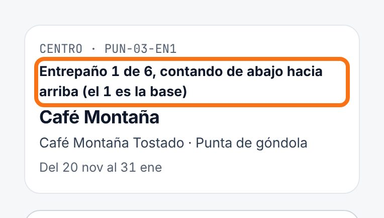
En ASÍ DEBE QUEDAR está la planometría: la foto o el dibujo de cómo debe verse. Tocá Tocá para verla en grande para ampliarla.
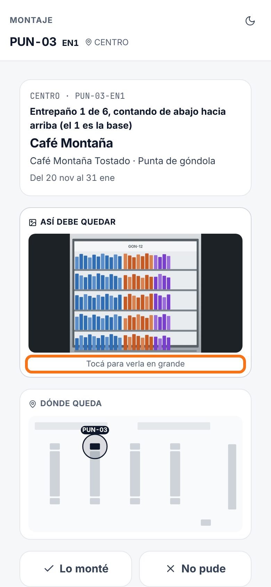
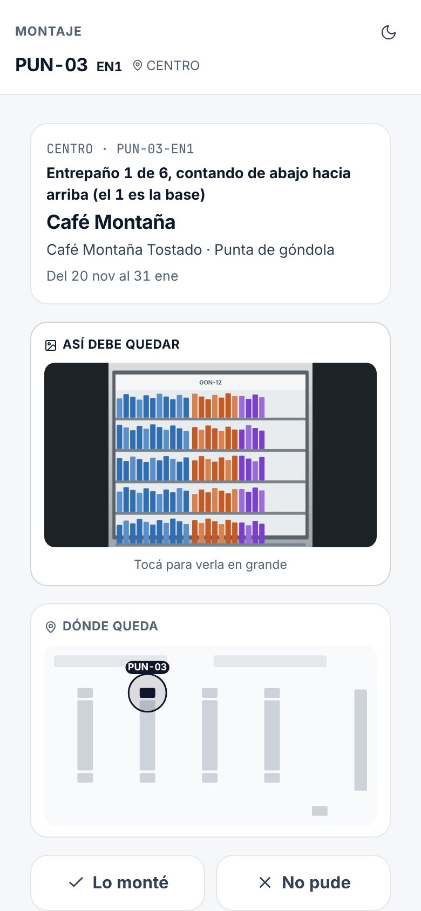
En DÓNDE QUEDA está el plano de la sede con tu mueble encerrado en un círculo.
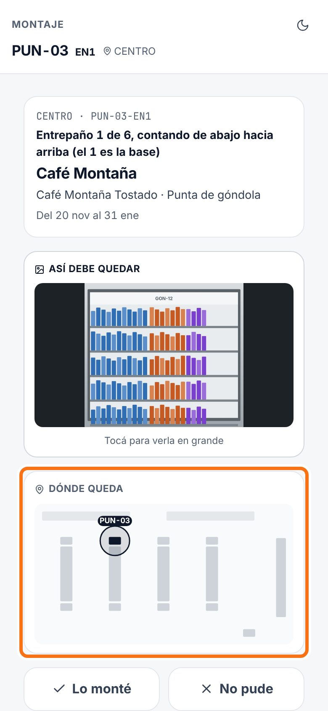
Avisale a quien administra la sede
Si no aparece ASÍ DEBE QUEDAR (todavía no cargaron la planometría) o el mueble del plano no existe en la tienda.
2.3 Reportar «Lo monté» con foto
Cuándo: apenas terminás de armar, parado frente al espacio.
Bajá hasta el final y tocá Lo monté.
Tocá Tomar foto y sacá una foto de frente de todo el espacio armado. Si ya la tenés, tocá o elegir una de la galería.
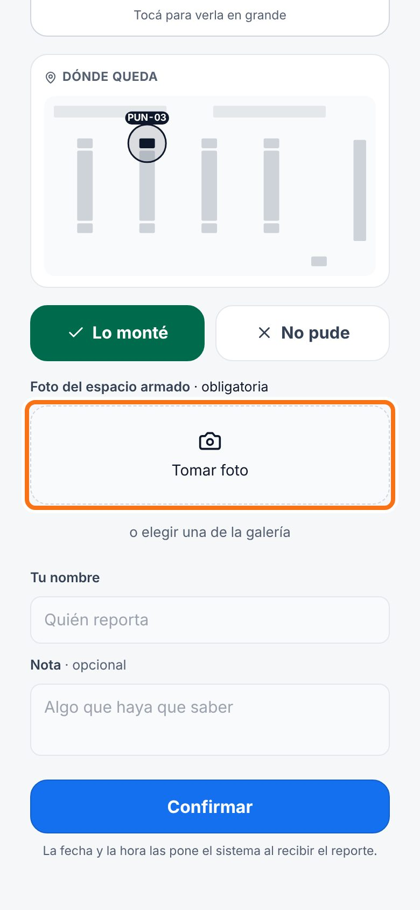
En Tu nombre escribí tu nombre. La nota es opcional: usala si hay algo que haya que saber.
Tocá Confirmar.
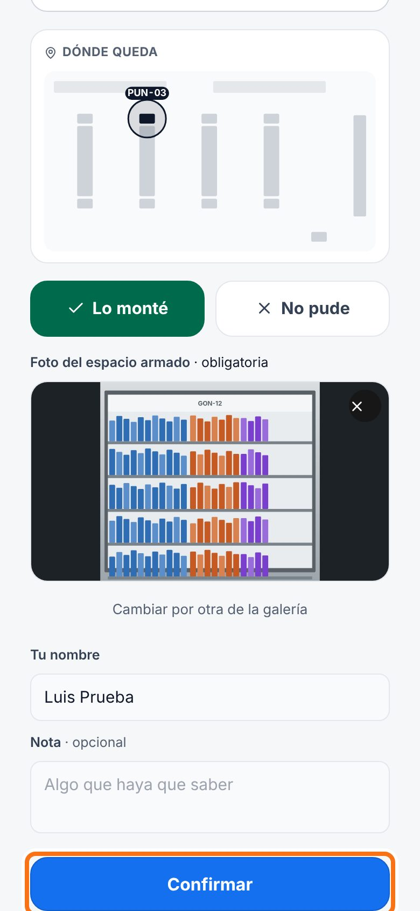
Listo cuando ves Listo, quedó reportado. La fecha y la hora las pone el sistema.
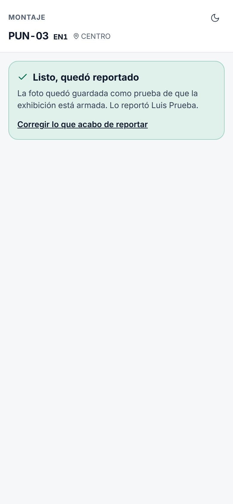
Si te olvidás la foto
Al tocar Confirmar aparece en rojo Falta la foto. Es la prueba de que la exhibición quedó armada. Tomala y volvé a tocar Confirmar. No se envió nada todavía.
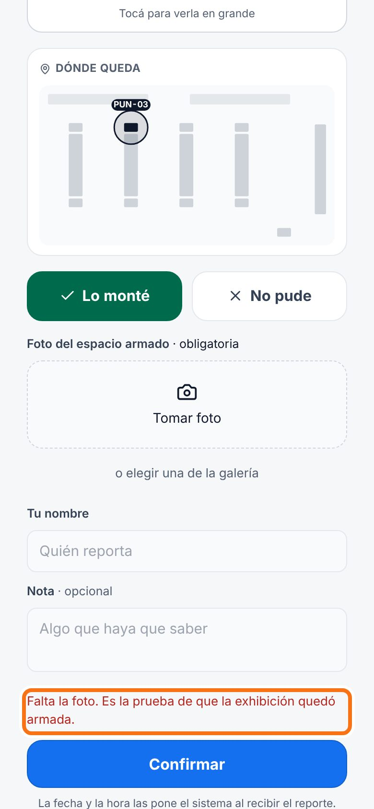
2.4 Corregir lo que acabo de reportar
Cuándo: si mandaste la foto equivocada, elegiste mal o escribiste mal tu nombre.
En la pantalla de Listo, quedó reportado, tocá Corregir lo que acabo de reportar.
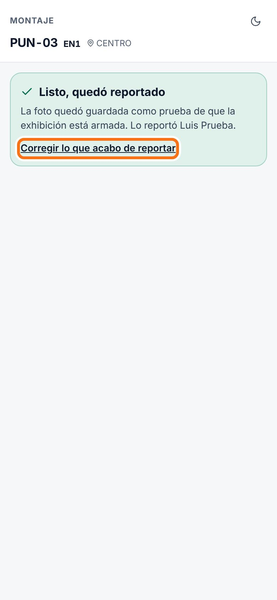
Vuelve a aparecer el espacio con Lo monté y No pude. Hacé el reporte otra vez, como en 2.3 o 2.5. Vale el último.
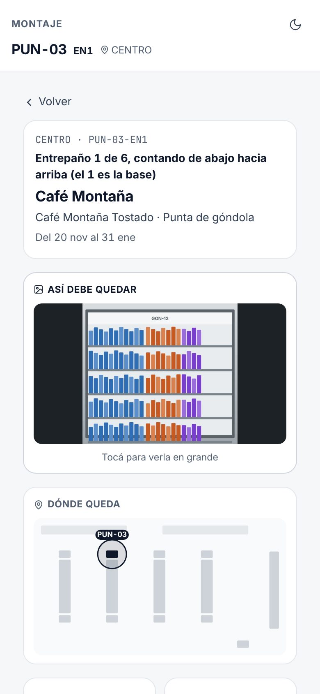
No se puede deshacer
Lo que confirmaste ya le llegó a quien administra la sede. Corregir manda un reporte nuevo; no borra el anterior. Si te equivocaste de espacio, avisale a quien administra.
2.5 Reportar «No pude»
Cuándo: si no lo podés armar: falta el material, no llegó el producto o el espacio está ocupado.
Abrí el enlace del espacio y tocá No pude.
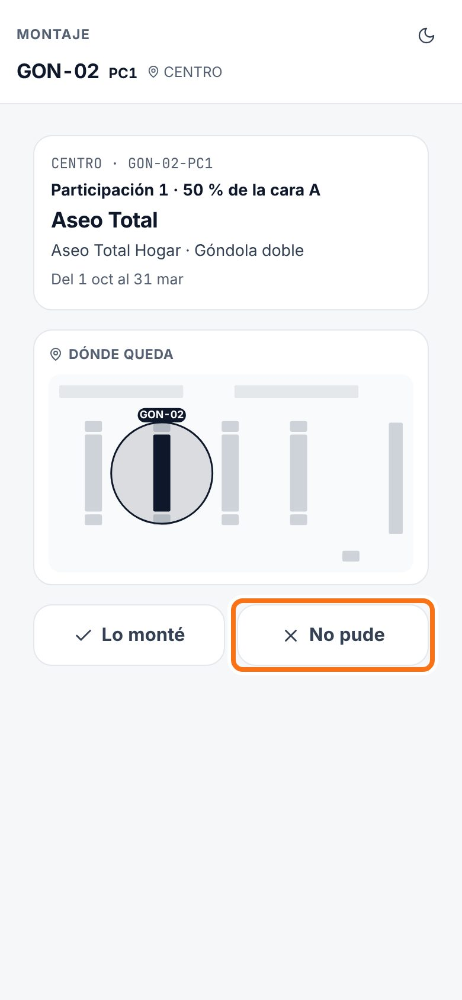
En ¿Qué pasó? tocá el motivo: El proveedor no entregó el material, No llegó el producto, El espacio está ocupado por otra cosa u Otro motivo.
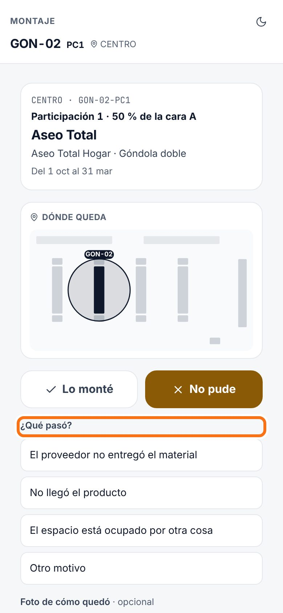
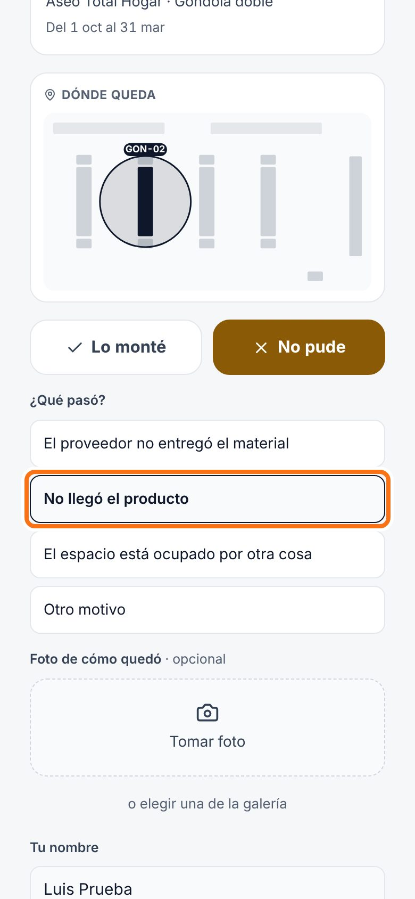
Escribí Tu nombre. La foto es opcional, pero ayuda (por ejemplo, del espacio ocupado). Contá en la nota lo que pasó.
Tocá Confirmar. Ves Listo, quedó reportado y Quedó registrado el motivo para que se pueda reclamar.
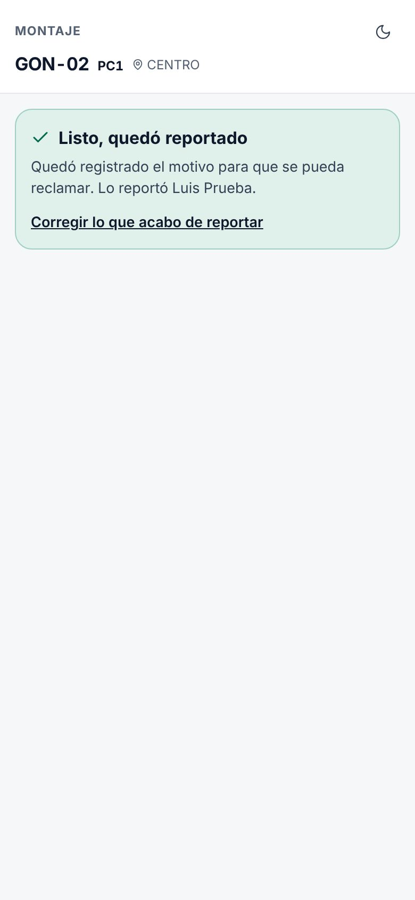
Después
Quien administra la sede ve el motivo y decide: reclamarle al proveedor, liberar el espacio o mandarte el aviso otra vez. Cuando se resuelva, te llega un enlace nuevo.
3Cuando te piden corregir
Quien administra la sede compara tu foto con la planometría. Si algo no coincide, te avisa qué arreglar. Lo ves al abrir el enlace de ese espacio.
3.1 Corregir un montaje que no coincide
Cuándo: cuando al abrir el enlace aparece arriba Hay que corregir el montaje.
Leé el recuadro Hay que corregir el montaje: debajo está lo que hay que arreglar. En el ejemplo: Falta el cabezote con el logo arriba de la punta.
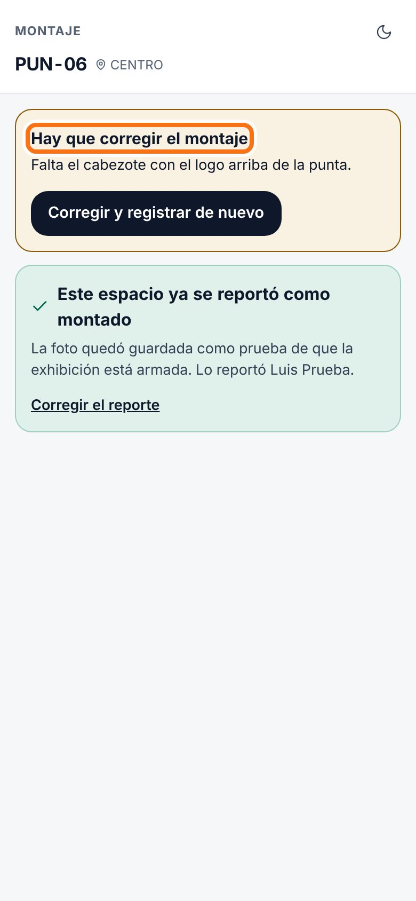
Arreglá el espacio en la tienda. Después tocá Corregir y registrar de nuevo.
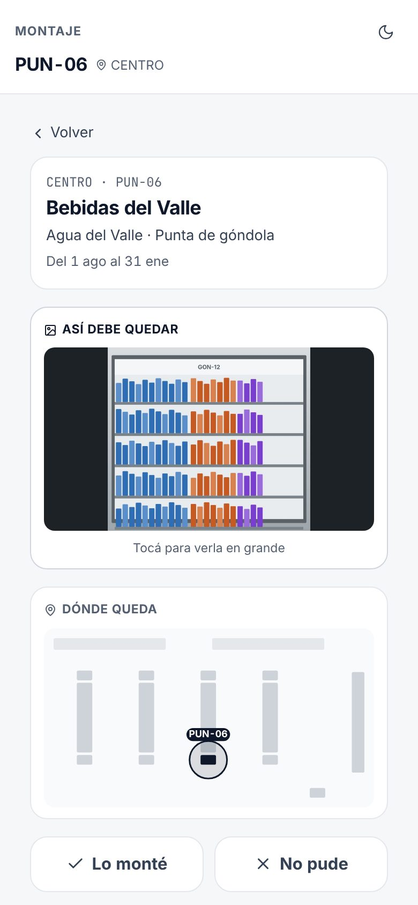
Reportá otra vez con Lo monté y una foto nueva, como en 2.3.
4La guía de una góndola de la casa
Las góndolas que no se alquilan (marca propia, categorías, promociones) se arman con una guía de montaje: una hoja numerada que dice qué va en cada franja de la cara. También te llega por correo, con su enlace.
4.1 Leer la guía
Cuándo: cuando te llega «Guía de montaje» o cuando hay una versión nueva de la cara.
Abrí el enlace. Arriba dice el mueble y la cara (GON-12 · cara A), la versión y desde cuándo rige.
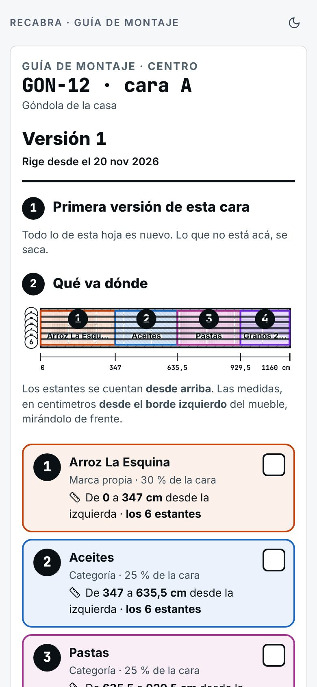
En Qué va dónde está la cara dibujada con sus números. Los estantes se cuentan desde arriba; las medidas, en centímetros desde el borde izquierdo, mirando el mueble de frente.
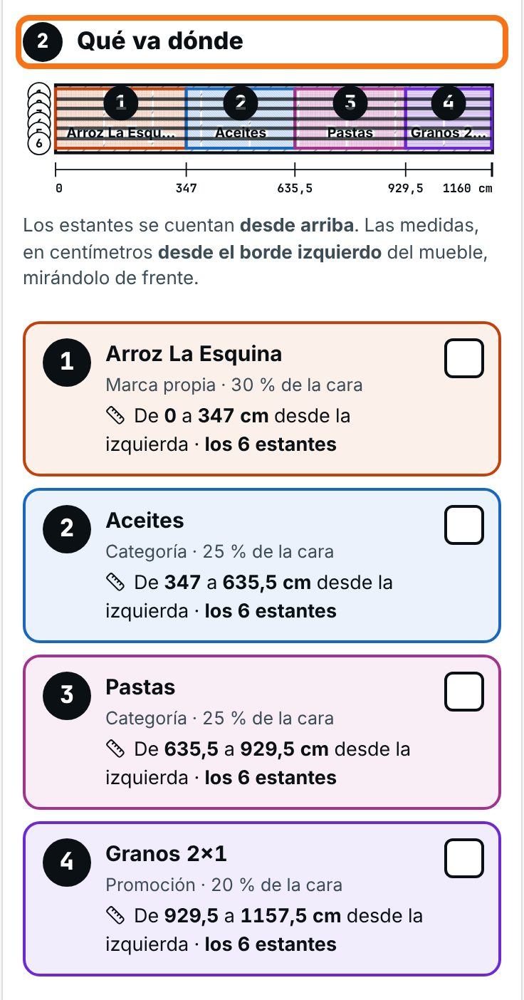
Cada número tiene su ficha: qué va, cuánto de la cara ocupa y de qué centímetro a qué centímetro. Cuando armes uno, tocá su casilla Listo.
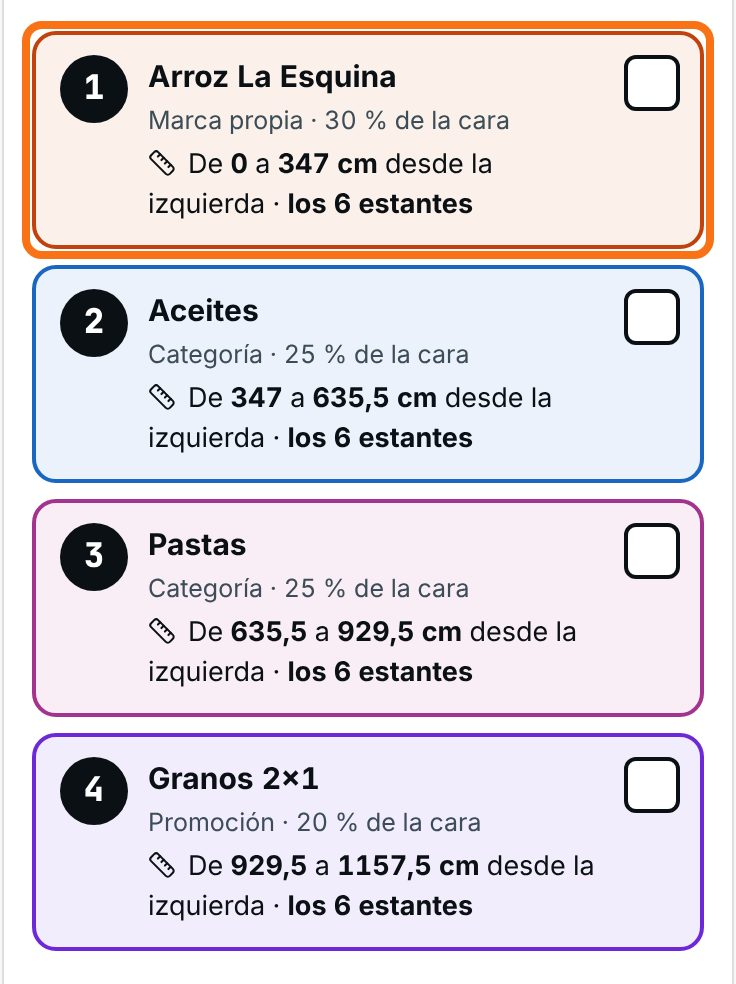
Para tener en cuenta
La guía dice Lo que no está acá, se saca. Una franja marcada Vacío a propósito se deja vacía. Si en el mueble hay otra versión impresa, vale la del enlace.
4.2 Avisar que quedó montada
En Al terminar, tocá las tres casillas cuando lo hayas hecho: sacaste lo que no va, cada número quedó en su lugar y tomaste la foto.
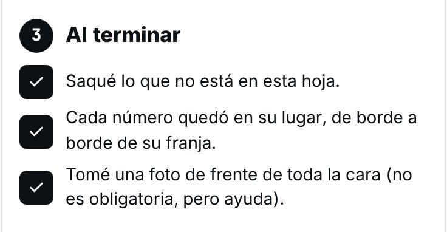
En ¿Cómo quedó? tocá Quedó montada. Con Sumar una foto agregás la foto (no es obligatoria, pero ayuda).
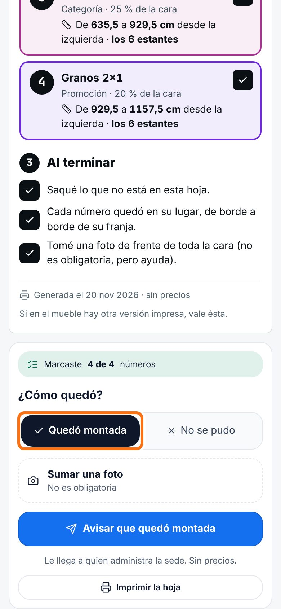
Tocá Avisar que quedó montada.
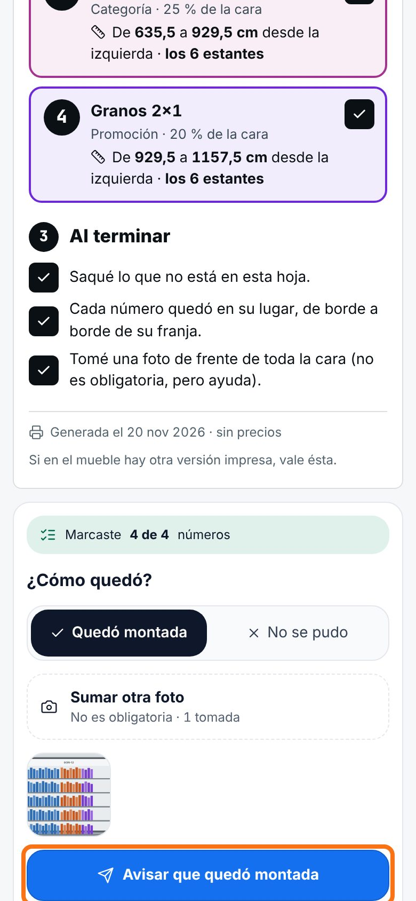
Listo cuando ves Listo: avisaste que quedó montada. Gracias. Le llega a quien administra la sede.
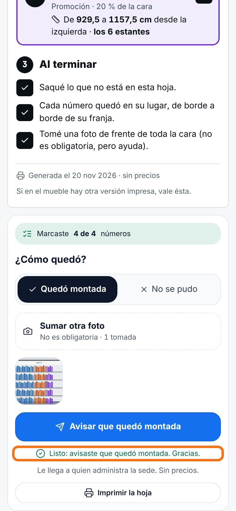
4.3 Avisar que no se pudo
En ¿Cómo quedó? tocá No se pudo y elegí el motivo: No llegó el producto, El lugar está ocupado por otra cosa, Falta material (separadores, cenefas) u Otro motivo.
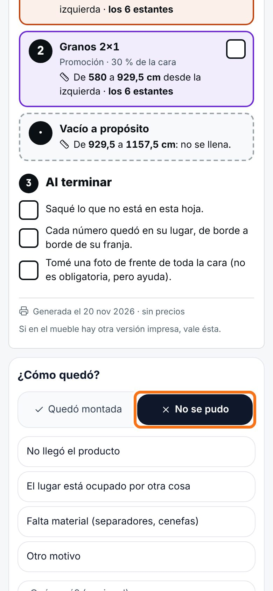
Tocá Avisar que no se pudo.
4.4 Imprimir la hoja
Al final de la guía tocá Imprimir la hoja si querés pegarla en el mueble mientras armás. Sale sin precios.
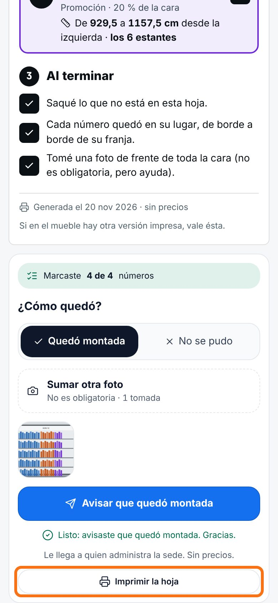
5Problemas frecuentes
Lo que más pasa en la tienda y qué hacer.
5.1 Me quedé sin señal al confirmar
No pasa nada: el reporte queda guardado en tu celular y se manda solo apenas vuelva la señal. Vas a ver Sin señal: tu reporte quedó guardado en este teléfono.
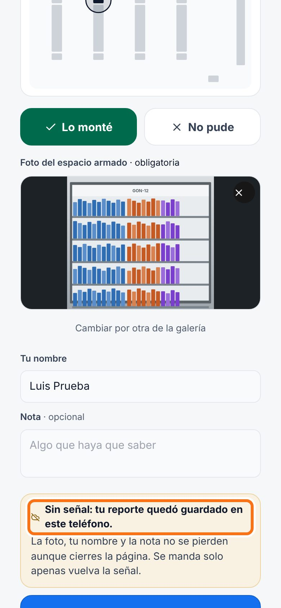
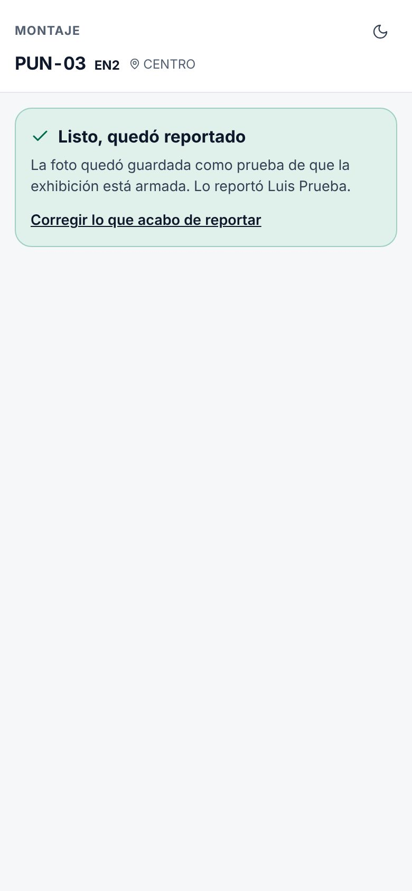
La foto, tu nombre y la nota no se pierden aunque cierres la página.
Si querés intentarlo ya, tocá Reintentar ahora.
Si cerraste la página, volvé a abrir el mismo enlace: te ofrece Mandar ahora o Descartar.
Ojo
No borres los datos del navegador ni cambies de celular hasta ver Listo, quedó reportado: el reporte guardado vive en ese celular.
5.2 «Este enlace ya no sirve»
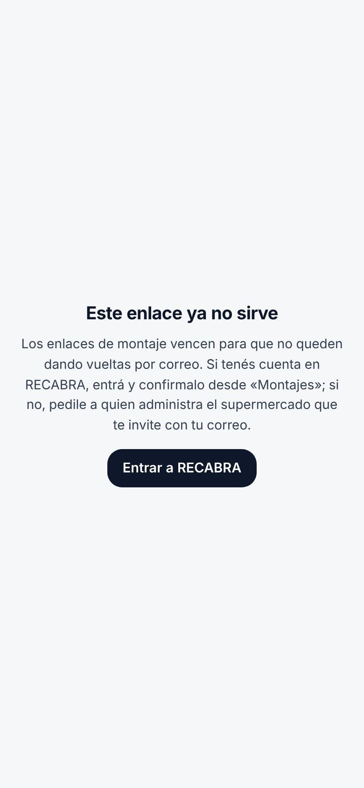
Los enlaces vencen un mes después de que arranca el contrato, o el contrato cambió. Avisale a quien administra la sede para que te mande el aviso otra vez. Si tenés cuenta en RECABRA, entrá y reportalo desde Montajes.
5.3 Otros problemas
Lo que pasa
Qué hacer
La cámara no abre.
Sacá la foto con la cámara del celular y después tocá o elegir una de la galería. Si sigue sin abrir, revisá que el navegador tenga permiso para la cámara.
Mandé la foto equivocada o elegí mal.
Corregir lo que acabo de reportar (2.4).
El espacio está ocupado por otra exhibición.
No pude › El espacio está ocupado por otra cosa, con foto. No saques lo de otro proveedor por tu cuenta.
No encuentro el mueble en la tienda.
Mirá DÓNDE QUEDA. Si el plano no coincide con la tienda, avisale a quien administra la sede.
No aparece ASÍ DEBE QUEDAR.
Todavía no cargaron la planometría. Avisale a quien administra; mientras tanto podés armar según lo que te indicó el proveedor.
No me llegó el correo.
Revisá el correo no deseado. Si no está, avisale a quien administra la sede: los avisos van al correo que cargaron como responsable de montaje.
Me llegó un enlace de otra persona.
No lo uses: el reporte quedaría a nombre de un espacio que no armaste. Pedí el tuyo.
Abro el enlace y dice Este espacio ya se reportó como montado.
Alguien ya lo reportó. Si está mal, tocá Corregir el reporte.
6Palabras que vas a ver
Palabra
Qué quiere decir
Planometría
La foto o el dibujo de cómo debe quedar la exhibición. Aparece en ASÍ DEBE QUEDAR.
Punta de góndola
El extremo de una góndola, el que da al pasillo principal.
Entrepaño (EN1, EN2…)
Un estante de una punta. EN1 es el de abajo (la base).
Cara A / cara B
Los dos lados de una góndola doble. La B es la de atrás.
Participación (PC1, PC2…)
Un pedazo de una cara (por ejemplo, el 50 %) vendido a un proveedor. La pantalla te dice qué pedazo.
Guía de montaje
La hoja numerada de una góndola de la casa: qué va en cada franja.
Versión
Cada vez que cambia la guía de una cara, sale una versión nueva. Vale la más nueva.
Quien administra la sede
La persona del supermercado que maneja RECABRA en esa tienda. Es a quien le avisás.
Modo oscuro
El ícono de la luna, arriba a la derecha, cambia la pantalla a oscuro (útil en bodegas con poca luz).